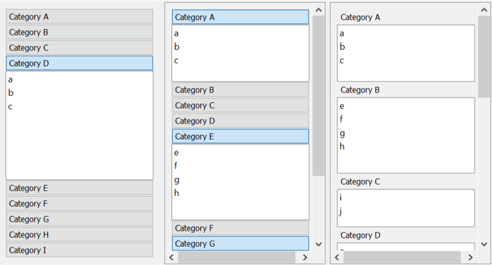

An Empirical Evaluation of Collapsible Panel Interfaces
Abstract
Although collapsible panel widgets have been widely used in industry for many years in various contexts, there have been no formal evaluations conducted to compare user performance and satisfaction with these interfaces. There is also a lack of formal guidance for user interface designers about how to choose among the many variations of collapsible panel schemes in existence. In this paper, we develop a classification framework and propose an empirical method for evaluating user performance with these interfaces. An experiment was conducted comparing accordions, collapsible panels, and flat panel layouts. This found a clear preference for accordions, with the need to scroll to find targets in the other interfaces cited as a key disadvantage of those approaches. Implications of these findings are discussed.

Examples of collapsible panel schemes – a) Accordion, b) Collapsible Panels, c) Flat Panels (non-collapsible)
Info
Title:
An Empirical Evaluation of Collapsible Panel Interfaces
Authors:
- Joshua Leung (joshua.leung@canterbury.ac.nz)
- Andy Cockburn (andy@cosc.canterbury.ac.nz)
Venue:
IEEE CSDE 2020 (Gold Coast, Australia) [Virtual due to COVID]
Keywords:
accordion, collapsible panels, empirical evaluation, hierarchical list, graphical user interface, information, architecture, user interface design patterns
Paper
The published version is available from IEEE Xplore.
- IEEE Xplore
- jsl_csde2020_paper.pdf
Slides
Slides presented at IEEE CSDE 2020:
Demo Implementation
Here is a Python 3 + PyQt5 demo application demonstrating the behaviour of several different Collapsible Panel interfaces (as shown below).
There are subtle differences between the PyQt5 interfaces and the original PyQt4 ones used in the experiments. The code above has had the necessary changes made to make it be able to run under modern Python 3 + PyQt5 environments (as of December 2020), as it is no longer possible to easily set up the original environment (i.e. due to dead links to binary packages).
BibTex
@INPROCEEDINGS {Leung:2020:CollapsiblePanels,
author = {J. Leung and A. Cockburn},
booktitle = {2020 IEEE Asia-Pacific Conference on Computer Science and Data Engineering (CSDE)},
title = {An Empirical Evaluation of Collapsible Panel Interfaces},
year = {2020},
volume = {},
issn = {},
pages = {1-6},
keywords = {industries;computer science;conferences;layout;user interfaces;data engineering;task analysis},
doi = {10.1109/CSDE50874.2020.9411552},
url = {https://doi.ieeecomputersociety.org/10.1109/CSDE50874.2020.9411552},
publisher = {IEEE Computer Society},
address = {Los Alamitos, CA, USA},
month = {dec}
}